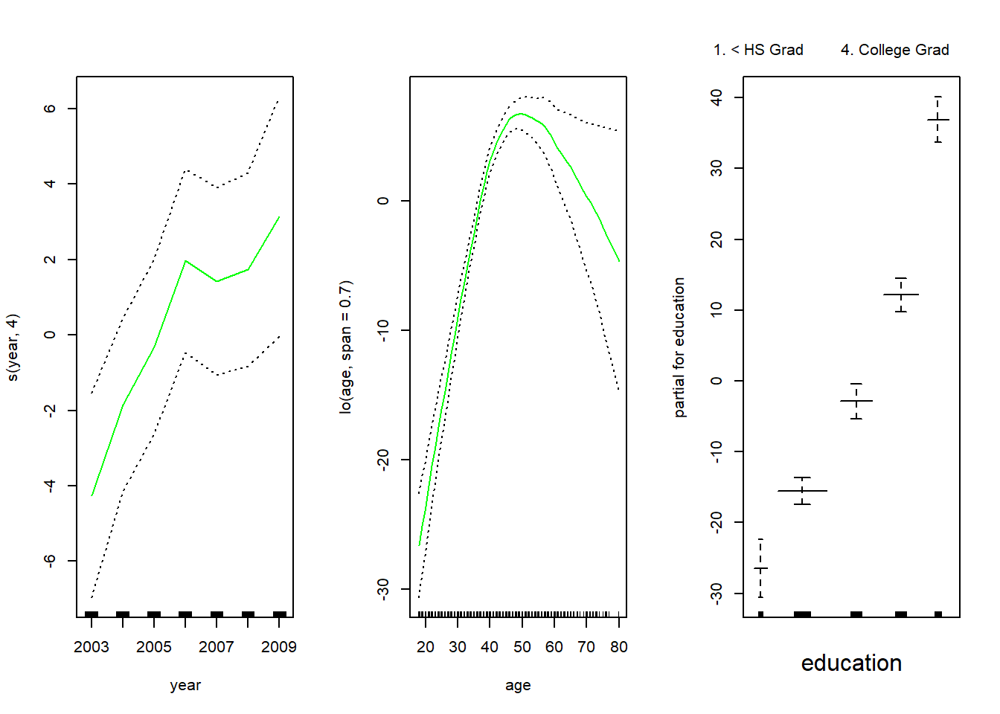

library(ISLR)
data(Wage)
sum(is.na(Wage))[1] 0dim(Wage)[1] 3000 11attach(Wage)Moving Beyond Linearity
Aditya Dahiya
February 24, 2021
We will analyse the Wage data set from the ISLR library. We also examine the data set and remove missing values.
We first fit the polynomial regression (up to 4th degree) of wage onto age. Then, we plot the Figure 7.1.
attach(Wage)
# Method 1: Using a matrix whose columns are the basis of orthogonal polynomials
fit1 <- lm(wage ~ poly(age, 4), data = Wage)
coef(summary(fit1)) Estimate Std. Error t value Pr(>|t|)
(Intercept) 111.70361 0.7287409 153.283015 0.000000e+00
poly(age, 4)1 447.06785 39.9147851 11.200558 1.484604e-28
poly(age, 4)2 -478.31581 39.9147851 -11.983424 2.355831e-32
poly(age, 4)3 125.52169 39.9147851 3.144742 1.678622e-03
poly(age, 4)4 -77.91118 39.9147851 -1.951938 5.103865e-02# Method 2: Using actual polynomials of `age` as predictors
fit2 <- lm(wage ~ age + I(age^2) + I(age^3) + I(age^4), data = Wage)
fit2 <- lm(wage ~ cbind(age, age^2, age^3, age^4), data = Wage)
fit2 <- lm(wage ~ poly(age, 4, raw = TRUE), data = Wage)
# All three produce the exact same model
coef(summary(fit2)) Estimate Std. Error t value Pr(>|t|)
(Intercept) -1.841542e+02 6.004038e+01 -3.067172 0.0021802539
poly(age, 4, raw = TRUE)1 2.124552e+01 5.886748e+00 3.609042 0.0003123618
poly(age, 4, raw = TRUE)2 -5.638593e-01 2.061083e-01 -2.735743 0.0062606446
poly(age, 4, raw = TRUE)3 6.810688e-03 3.065931e-03 2.221409 0.0263977518
poly(age, 4, raw = TRUE)4 -3.203830e-05 1.641359e-05 -1.951938 0.0510386498# Creating a grid of values of age for which to predict wage
agelims <- range(age)
age.grid <- seq(agelims[1], agelims[2], by = 1)
# Predicting wage for each age, with standard errors
pred.wage <- predict(fit1, newdata = data.frame(age = age.grid), se = TRUE)
se.bands <- cbind(
pred.wage$fit - 2 * pred.wage$se.fit,
pred.wage$fit + 2 * pred.wage$se.fit
)
# Predicting I(Wage>250) based on up-to 4th polynomial of age
# I(wage>250) creates a boolean vector which glm() coerces into 0 and 1
table(I(wage > 250))
FALSE TRUE
2921 79 # Fitting a logistic regression: Methods 1 and 2
fit3 <- glm(I(wage > 250) ~ poly(age, 4), data = Wage, family = "binomial")
fit4 <- glm(I(wage > 250) ~ poly(age, 4, raw = TRUE), data = Wage, family = "binomial")
# Predicting values (not using type = "response", bcoz that can't create proper SE)
pred.I.wage <- predict(fit3, newdata = data.frame(age = age.grid), se = TRUE)
# Converting logit into probabilities
fit.I.wage <- exp(pred.I.wage$fit) / (1 + exp(pred.I.wage$fit))
se.I.wage <- cbind(
pred.I.wage$fit - 2 * pred.I.wage$se.fit,
pred.I.wage$fit + 2 * pred.I.wage$se.fit
)
se.I.wage <- exp(se.I.wage) / (1 + exp(se.I.wage))
# Creating the left hand side plot of Fig 7.1
par(
mfrow = c(1, 2),
mar = c(4.5, 4.5, 1, 1), oma = c(0, 0, 4, 0)
)
# Left Hand Side Plot
plot(x = age, y = wage, xlim = agelims, cex = 0.5, col = "darkgrey")
title("Degree 4 Polynomial", outer = TRUE)
lines(age.grid, pred.wage$fit, col = "blue", lwd = 2)
matlines(age.grid, se.bands, col = "blue", lty = 3, lwd = 1)
# Right Hand Side Plot
plot(x = age, y = I(wage > 250), type = "n", ylim = c(0, 0.2))
points(
x = jitter(age), y = I(wage > 250) / 5, cex = 0.5, pch = "|",
col = "darkgrey"
)
lines(x = age.grid, y = fit.I.wage, col = "blue", lwd = 2)
matlines(x = age.grid, se.I.wage, col = "blue", lty = 3)# Now, we examine similarity between method 1 and 2
# Demonstrating that fitted values from both are the same
pred.wage.2 <- predict(fit2, newdata = data.frame(age = age.grid), se = TRUE)
max(pred.wage$fit - pred.wage.2$fit) # Showing max. difference between two[1] -2.515321e-12pred.I.wage.2 <- predict(fit4, newdata = data.frame(age = age.grid), se = TRUE)
max(pred.I.wage$fit - pred.I.wage.2$fit) # Showing max. difference between two[1] 3.792522e-12# Lastly, we find which level of polynomials fit the data best
# Method 1
fit <- list()
for (i in 1:5) {
model <- paste("M", i, sep = "")
fit[[model]] <- lm(wage ~ poly(age, i), data = Wage)
}
anova(fit$M1, fit$M2, fit$M3, fit$M4, fit$M5)Analysis of Variance Table
Model 1: wage ~ poly(age, i)
Model 2: wage ~ poly(age, i)
Model 3: wage ~ poly(age, i)
Model 4: wage ~ poly(age, i)
Model 5: wage ~ poly(age, i)
Res.Df RSS Df Sum of Sq F Pr(>F)
1 2998 5022216
2 2997 4793430 1 228786 143.5931 < 2.2e-16 ***
3 2996 4777674 1 15756 9.8888 0.001679 **
4 2995 4771604 1 6070 3.8098 0.051046 .
5 2994 4770322 1 1283 0.8050 0.369682
---
Signif. codes: 0 '***' 0.001 '**' 0.01 '*' 0.05 '.' 0.1 ' ' 1 Estimate Std. Error t value Pr(>|t|)
(Intercept) 111.70361 0.7287647 153.2780243 0.000000e+00
poly(age, i)1 447.06785 39.9160847 11.2001930 1.491111e-28
poly(age, i)2 -478.31581 39.9160847 -11.9830341 2.367734e-32
poly(age, i)3 125.52169 39.9160847 3.1446392 1.679213e-03
poly(age, i)4 -77.91118 39.9160847 -1.9518743 5.104623e-02
poly(age, i)5 -35.81289 39.9160847 -0.8972045 3.696820e-01# Method 2 (where we have extra variables like education) [Same Results]
fit <- list()
for (i in 1:5) {
model <- paste("M", i, sep = "")
fit[[model]] <- lm(wage ~ poly(age, i, raw = TRUE), data = Wage)
}
anova(fit$M1, fit$M2, fit$M3, fit$M4, fit$M5)Analysis of Variance Table
Model 1: wage ~ poly(age, i, raw = TRUE)
Model 2: wage ~ poly(age, i, raw = TRUE)
Model 3: wage ~ poly(age, i, raw = TRUE)
Model 4: wage ~ poly(age, i, raw = TRUE)
Model 5: wage ~ poly(age, i, raw = TRUE)
Res.Df RSS Df Sum of Sq F Pr(>F)
1 2998 5022216
2 2997 4793430 1 228786 143.5931 < 2.2e-16 ***
3 2996 4777674 1 15756 9.8888 0.001679 **
4 2995 4771604 1 6070 3.8098 0.051046 .
5 2994 4770322 1 1283 0.8050 0.369682
---
Signif. codes: 0 '***' 0.001 '**' 0.01 '*' 0.05 '.' 0.1 ' ' 1In this section, we use the splines library. We could also use the locfit library. We will fit (Part A) splines with basis function bs(), (Part B) natural splines using the ns() function, (Part C) smoothing splines using the smooth.spline() function and (Part D) local regression using the loess() function. We will try to predict wage from age in the Wage data set.
library(splines)
attach(Wage)
# Understanding the functions bs(), ns()
# We can use wither df (degrees of freedom) or specify "knots"
dim(bs(age, knots = c(20,40,60)))[1] 3000 6[1] 3000 6[1] 33.75 42.00 51.00# We can use option degree to specify the level of polynomial (eg. x^5)
dim(bs(age, degree = 5, knots = c(20,40,60)))[1] 3000 8[1] 3000 6[1] 42# Part A: REGRESSION SPLINES (CUBIC)
fits = lm(wage ~ bs(age, knots = c(25,40,60)), data = Wage)
# Calculate predicted values
preds = predict(fits, newdata = data.frame(age = age.grid), se = TRUE)
se.preds = cbind(preds$fit - 2*preds$se.fit,
preds$fit + 2*preds$se.fit)
# Plotting the results - Blue lines for Cubic Splines
plot(x = age, y = wage, col = "darkgrey", cex = 0.5)
lines(x = age.grid, y = preds$fit, col = "blue", lwd = 1.5)
matlines(x = age.grid, se.preds, col = "blue", lty = 3, lwd = 0.8)# Part B: NATURAL SPLINES
fit.ns = lm(wage ~ ns(age, df = 4), data = Wage)
pred.ns = predict(fit.ns, newdata = data.frame(age = age.grid), se = TRUE)
se.pred.ns = cbind(pred.ns$fit - 2*pred.ns$se.fit,
pred.ns$fit + 2*pred.ns$se.fit)
# Plotting the results (Blue - Cubic Spline) (Red - Natural Cubic Spline)
plot(x = age, y = wage, col = "darkgrey", cex = 0.5)
lines(x = age.grid, y = preds$fit, col = "blue", lwd = 1.5)
matlines(x = age.grid, se.preds, col = "blue", lty = 3, lwd = 0.8)
lines(x = age.grid, y = pred.ns$fit, col = "red", lwd = 1.5)
matlines(x = age.grid, se.pred.ns, col = "red", lty = 3, lwd = 0.8)
legend("topright", c("Cubic Spline", "Natural Spline"), lty = c(1,1),
col = c("blue", "red"), lwd = c(1.5, 1.5), cex = 0.8)# Part C: SMOOTHING SPLINES
fit.ss1 = smooth.spline(age, wage, df = 16)
fit.ss2 = smooth.spline(age, wage, cv = TRUE)
fit.ss2$df # Viewing the CV-selected degrees of freedom[1] 6.794596# Plotting Smoothing Splines directly (no need to calculate predicted values)
plot(x = age, y = wage, col = "darkgrey", cex = 0.5, main = "Smoothing Splines")
lines(fit.ss1, col = "orange", lwd = 1)
lines(fit.ss2, col = "brown", lwd = 1)
legend("topright", c("SS with df = 16", "SS with df = 6.8"),
lty = c(1,1), lwd = c(1,1), col = c("orange", "brown"))# Part D: LOESS (Local Regression)
fit.L1 = loess(wage ~ age, span = 0.2, data = Wage)
fit.L2 = loess(wage ~ age, span = 0.5, data = Wage)
# Plotting the Local Regression with two different spans
plot(x = age, y = wage, col = "darkgrey", cex = 0.5, main = "Local Regression")
lines(x = age.grid, y = predict(fit.L1, newdata = data.frame(age = age.grid)),
col = "red", lty = 1, lwd = 1.5)
lines(x = age.grid, y = predict(fit.L2, newdata = data.frame(age = age.grid)),
col = "blue", lty = 1, lwd = 1.5)
legend("topright", c("Span 0.2", "Span 0.5"), lty = c(1,1),
lwd = c(1,1), col = c("red", "blue"))We now use Generalized Additive Models to predict wage from age, year and education from the Wage data set.
# Using lm() for natural splines
library(splines)
library(gam)
gam1 <- lm(wage ~ ns(year, 4) + ns(age, 5) + education, data = Wage)
par(mfrow = c(1, 3))
plot.Gam(gam1, se = TRUE, col = "red")# Using gam() for more complicated stuff: Smoothing Splines
library(gam)
gam.m3 <- gam(wage ~ s(year, 4) + s(age, 5) + education, data = Wage)
par(mfrow = c(1, 3))
plot(gam.m3, se = TRUE, col = "blue")# Comparing the 3 models m1: no year included, m2 = linear in year,
# m3 = smoothing spline in year with df = 4
gam.m1 <- gam(wage ~ s(age, 5) + education, data = Wage)
gam.m2 <- gam(wage ~ year + s(age, 5) + education, data = Wage)
anova(gam.m1, gam.m2, gam.m3)Analysis of Deviance Table
Model 1: wage ~ s(age, 5) + education
Model 2: wage ~ year + s(age, 5) + education
Model 3: wage ~ s(year, 4) + s(age, 5) + education
Resid. Df Resid. Dev Df Deviance Pr(>Chi)
1 2990 3711731
2 2989 3693842 1 17889.2 0.0001419 ***
3 2986 3689770 3 4071.1 0.3483897
---
Signif. codes: 0 '***' 0.001 '**' 0.01 '*' 0.05 '.' 0.1 ' ' 1
Call: gam(formula = wage ~ year + s(age, 5) + education, data = Wage)
Deviance Residuals:
Min 1Q Median 3Q Max
-119.959 -19.647 -3.199 13.969 213.562
(Dispersion Parameter for gaussian family taken to be 1235.812)
Null Deviance: 5222086 on 2999 degrees of freedom
Residual Deviance: 3693842 on 2989 degrees of freedom
AIC: 29885.06
Number of Local Scoring Iterations: NA
Anova for Parametric Effects
Df Sum Sq Mean Sq F value Pr(>F)
year 1 27154 27154 21.973 2.89e-06 ***
s(age, 5) 1 194535 194535 157.415 < 2.2e-16 ***
education 4 1069081 267270 216.271 < 2.2e-16 ***
Residuals 2989 3693842 1236
---
Signif. codes: 0 '***' 0.001 '**' 0.01 '*' 0.05 '.' 0.1 ' ' 1
Anova for Nonparametric Effects
Npar Df Npar F Pr(F)
(Intercept)
year
s(age, 5) 4 32.46 < 2.2e-16 ***
education
---
Signif. codes: 0 '***' 0.001 '**' 0.01 '*' 0.05 '.' 0.1 ' ' 1# Predicting values from gam()
preds <- predict(gam.m2, newdata = Wage)
# Using gam with Local Regression on only 1 variable
gam.lo <- gam(wage ~ s(year, 4) + lo(age, span = 0.7) + education,
data = Wage
)
par(mfrow = c(1, 3))
plot(gam.lo, se = TRUE, col = "green")
# Using gam with local regression on interaction of age and year
gam.lo.i <- gam(wage ~ lo(year, age, span = 0.5) + education, data = Wage)
# Plotting this model in 3-D using akima
library(akima)
# Using gam for logistic regression
gam.lr <- gam(I(wage > 250) ~ year + s(age, 5) + education, data = Wage, family = "binomial")
par(mfrow = c(1, 3))
plot(gam.lr, se = TRUE, col = "green")# Removing <HS category in education to remove the surprising results
gam.lr <- gam(I(wage > 250) ~ year + s(age, 5) + education,
data = Wage,
family = "binomial", subset = (education != "1. < HS Grad")
)
par(mfrow = c(1, 3))
plot(gam.lr, se = TRUE, col = "green")